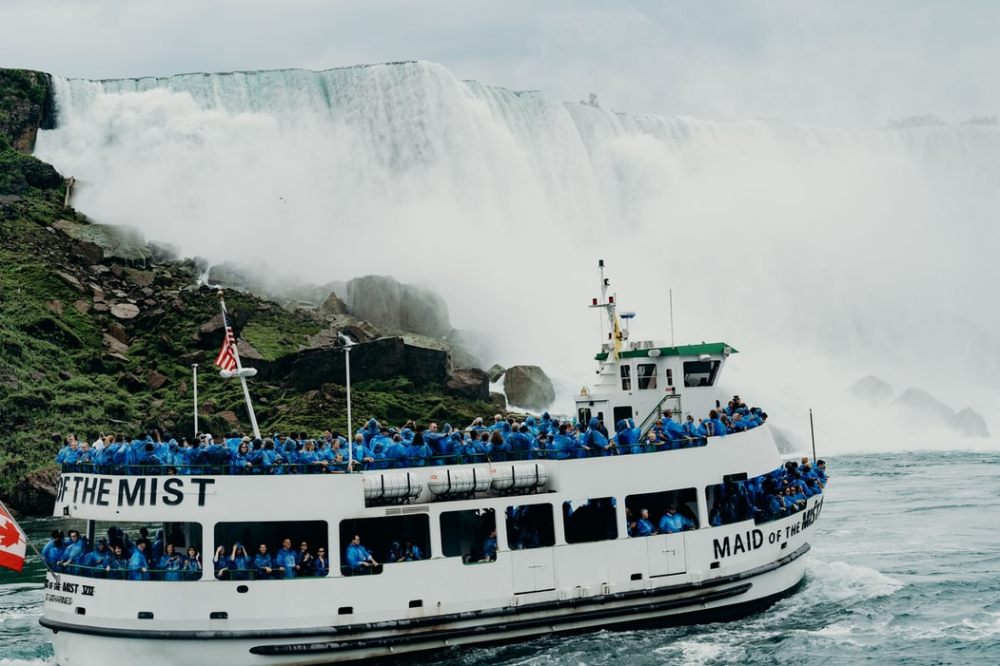
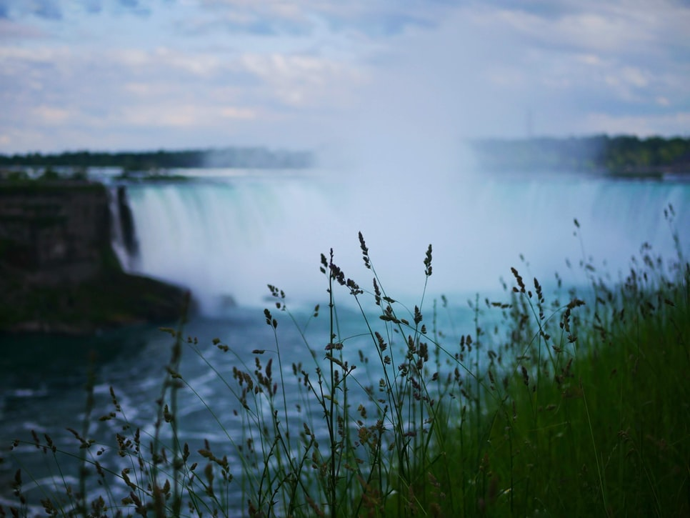
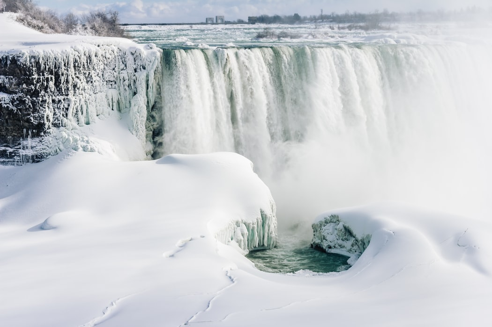

- 

 -
According to niagarafallsusa.com:
"Niagara Falls history is rich in heritage and interesting facts, from daredevils who have attempted to take on the mighty Falls to electrifying inventors such as Nikola Tesla, best known for his contributions to the design of the modern alternating current electricity supply system.
Niagara Falls was formed starting more than 12,000 years ago at the end of the Ice Age when large torrents of water were released from the melting ice, draining into the Niagara River. The water plunged over the edge of the Niagara Escarpment – to what is now known as Lewiston, NY. Eventually, the force of the water wore away the rock layers and Niagara Falls moved upstream, reaching its present location. Year after year, the formation continues with the annual freezing and thawing of the Niagara River, along with gradual erosion and periodic rock-falls. Remedial work has been completed to preserve the Falls and the volume of water has been reduced by diversion for hydroelectric power.
Native Americans living in the region were most likely the first people to behold the power of Niagara Falls. After that, Niagara Falls was discovered by French explorer, Father Louis Hennepin in December 1678. The region soon became a French stronghold, as forts were built at the mouth of the Niagara River, controlling access to the Great Lakes. The fort was restored between 1926 and 1934 and is now present day, Old Fort Niagara – an 18th century fortress offering daily programming including live reenactments and demonstrations year-round."
Read more
Home
7 must-do Niagara Falls activities and experiences